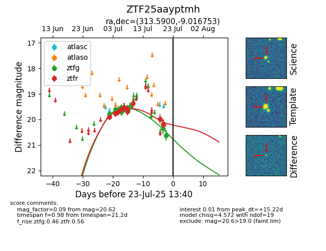

Target ZTF25aayptmh at 2025-07-23 13:40, see:
FINK: fink-portal.org/ZTF25aayptmh
Lasair: lasair-ztf.lsst.ac.uk/objects/ZTF25aayptmh
ALeRCE: alerce.online/object/ZTF25aayptmh
alt names
ZTF25aayptmh (ztf,fink)
coordinates:
equatorial (ra, dec) = (313.5900,-9.01675)
galactic (l, b) = (39.0266,-31.37440)
photometry
last ztfg=20.62, ztfr=20.20
14 ztfg, 10 ztfr detections
